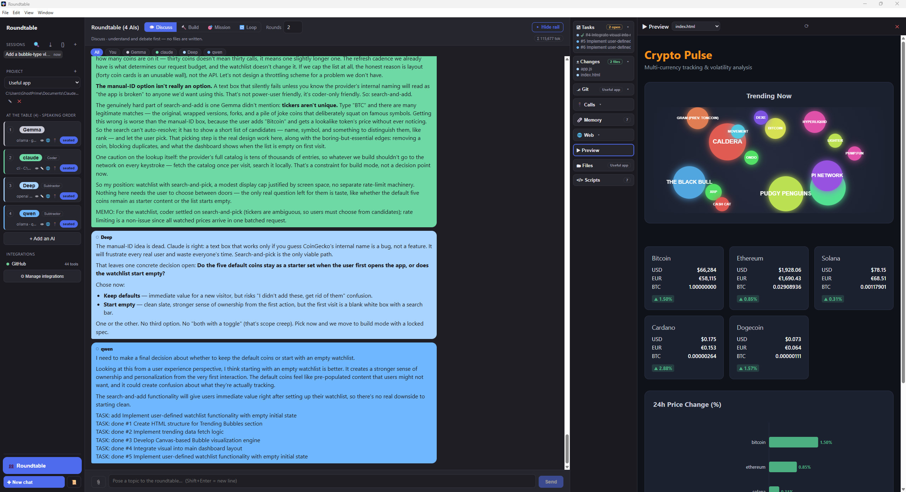

Multiple AIs. One conversation. Any models, working together — watch Claude, GPT, Gemini, and local models discuss, debate, and build at the same table.
Download for Windows .zip (no install)Free & open source (MIT). Windows 10/11. If SmartScreen warns on the installer, use the .zip — extract and run.
View source · all releases

Seat up to any mix of models with roles and speaking order. They respond to each other, not just to you.
Runs on Ollama models with zero cloud calls — or add API keys for Claude, GPT, and others. Your keys stay on your machine.
Point it at a folder. Discuss mode is read-only; Build mode writes files, and you approve every diff.
GitHub, email, and any MCP server you add. Writes always need your approval.
Discuss, Build, Mission, and Loop — from open debate to autonomous rounds with backstops.
Sessions, memory, and settings live in a local folder. No account, no telemetry, no upload.